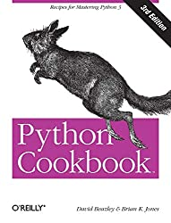
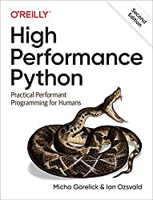
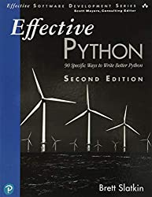
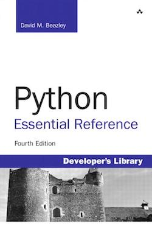
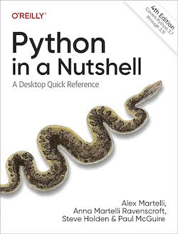

Python Books on Execution Time Benchmarking
There are no books focused on benchmarking Python, at the time of writing.
Nevertheless, many of the most popular books on Python and high-performance Python do have sections or examples of benchmarking Python.
In this tutorial, we will summarize the books that cover the benchmarking of execution time in Python programs and the methods that are used.
Let's get started.
Execution Time Benchmarking
There are many aspects of a Python program that could be benchmarked, such as memory usage and execution time.
Measuring and then optimizing the speed of a program, e.g. the execution time is perhaps the most common type of benchmarking performed.
Execution time benchmarking involves the systematic measurement and evaluation of the time taken by a program or a specific code segment to execute on a computing system.
It aims to quantify the performance of code by capturing the duration it requires to complete its tasks. This process is essential for identifying bottlenecks, optimizing critical sections of code, and comparing different implementations to make informed decisions about code efficiency and improvements.
Execution time benchmarking provides insights into how efficiently a program utilizes system resources, including CPU time, memory, and I/O operations. By measuring execution time, developers can pinpoint areas for enhancement, validate the impact of optimizations, and ensure that code meets performance expectations under varying conditions.
Accurate execution time benchmarking requires careful consideration of factors such as clock precision, external influences, and measurement methods.
It can involve using tools like Python's time module or timeit module, dedicated benchmarking libraries, or even Unix utilities like the time command.
For example:
- 5 Ways to Measure Execution Time in Python
- Benchmark Python with timeit
- Benchmark Python Program with time Command
By systematically measuring and analyzing execution time, developers can make informed trade-offs, optimize algorithms, and enhance overall software performance, resulting in more responsive and efficient applications.
7 Books That Cover Benchmarking
There are many books on Python and many of those books cover code optimization and benchmarking.
It is helpful to review the sections of books that cover execution time benchmarking to get an idea of best practices, e.g. which methods are used and how they are used. This can be helpful when choosing the methods we wish to use to benchmark our own Python programs.
Below provides a list of 7 more popular Python reference books and books on high-performance computing that have a section of execution time benchmarking or make extensive use of benchmarking in the text:
- Python Cookbook, 2013.
- High Performance Python, 2020.
- Effective Python, 2019
- Python Essential Reference, 2009.
- Python in a Nutshell, 2023.
- Python Concurrency with asyncio, 2022.
- Using Asyncio in Python, 2020.
Did I miss a book?
Do you know a book that has a great section on execution time benchmarking? Let me know in the comments below.
Let's take a closer look at each book in turn.
Python Cookbook
The book "Python Cookbook: Recipes for Mastering Python 3" (third edition) was written by David Beazley and Brian Jones and published in 2013.

This book is aimed at more experienced Python programmers who are looking to deepen their understanding of the language and modern programming idioms. Much of the material focuses on some of the more advanced techniques used by libraries, frameworks, and applications.
-- Page xii, Python Cookbook, 2013.
It's an older book, but a classic with very useful information.
The book contains many recipes that show that one method is faster than another.
This is achieved using the timeit module, specifically the timeit API, not the command line interface.
For studying the performance of small code fragments, the timeit module can be useful.
-- Page 589, Python Cookbook, 2013.
Some examples do make use of the time.time() function and the time.counter_perf() function.
The recipes make use of the time.time() function to demonstrate a technique such as developing an annotation or context manager where the worked examples time a target function.
These include:
- 9.1. Putting a Wrapper Around a Function: You want to put a wrapper layer around a function that adds extra processing (e.g., logging, timing, etc.).
- 9.10. Applying Decorators to Class and Static Methods: You want to apply a decorator to a class or static method.
- 9.22. Defining Context Managers the Easy Way: You want to implement new kinds of context managers for use with the with statement.
There are then specific recipes on timing the execution of code.
The first involves developing a stopwatch timer class that makes use of the time.perf_counter() function.
- 13.13. Making a Stopwatch Timer: You want to be able to record the time it takes to perform various tasks.
The second is a recipe dedicated to benchmarking code that covers the time module, the timeit module, and the time Unix command.
- 14.13. Profiling and Timing Your Program: You would like to find out where your program spends its time and make timing measurements.
Because of the worked examples and dedicated recipes, it might be one of the more complete presentations of the topic of benchmarking execution time in Python in a book, although spread across the book rather than all together.
High Performance Python
The book "High Performance Python: Practical Performant Programming for Humans" was written by Ian Ozsvald and Micha Gorelick and published in 2020.

It is all about making Python code run faster, with a focus on CPU-bound tasks.
While this book is primarily aimed at people with CPU-bound problems, we also look at data transfer and memory-bound solutions. Typically, these problems are faced by scientists, engineers, quants, and academics.
-- Page xiii, High Performance Python, 2020.
It makes extensive use of the timeit module to run microbenchmarks to demonstrate that one technique is faster than another.
It does make occasional use of the time.time() function for benchmarking code blocks.
Importantly, the book has a chapter dedicated to profiling code, including benchmarking:
- Chapter 2: Profiling to Find Bottlenecks
This chapter addresses the questions:
* How can I identify speed and RAM bottlenecks in my code?
-- Page 22, High Performance Python, 2020.
* How do I profile CPU and memory usage?
* What depth of profiling should I use?
* How can I profile a long-running application?
* What’s happening under the hood with CPython?
* How do I keep my code correct while tuning performance?
Most examples are demonstrated in a notebook, and suggest using the %timeit macro, or the time.time() function. Interestingly, the time.perf_counter() function is not mentioned or used.
The basic techniques that are introduced first in this chapter include the %timeit magic in IPython, time.time(), and a timing decorator. You can use these techniques to understand the behavior of statements and functions.
-- Page 22, High Performance Python, 2020.
The chapter has a section titled "Simple Approaches to Timing—print and a Decorator" on how to develop a function decorator (annotation) to benchmark target functions using the time.time() module. This decorator is then used throughout the book.
A slightly cleaner approach is to use a decorator—here, we add one line of code above the function that we care about. Our decorator can be very simple and just replicate the effect of the print statements. Later, we can make it more advanced.
-- Page 30, High Performance Python, 2020.
This chapter also has a section titled "Simple Timing Using the Unix time Command" that explains how to use the time Unix command to benchmark entire scripts, and how to interpret the results.
We can step outside of Python for a moment to use a standard system utility on Unix-like systems.
-- Page 33, High Performance Python, 2020.
The dedicated chapter and focus on timeit, a timing decorator and the time Unix command make this a great book on the topic.
Effective Python
The book "Effective Python: 90 Specific Ways to Write Better Python" was written by Brett Slatkin and published in 2019.

It is a fantastic book that shows "the right way" to achieve many tasks in Python.
This book provides insight into the Pythonic way of writing programs: the best way to use Python. It builds on a fundamental understanding of the language that I assume you already have. Novice programmers will learn the best practices of Python’s capabilities. Experienced programmers will learn how to embrace the strangeness of a new tool with confidence.
-- Page xvii, Effective Python, 2019.
Nevertheless, the book does not have a dedicated chapter or recipes on benchmarking.
It does make extensive use of the timeit module to benchmark code statements and snippets, to show that one is faster than another. Specifically, the timeit API is used, not the command line interface.
The book does provide more advanced recipes toward the end on the topic of concurrency. These make use of the time.time() function to benchmark blocks of code.
The time.perf_counter() function is not used.
The book provides a good example of how to make repeated and ad hoc use of the timeit module, a best practice.
Python Essential Reference
The book "Python Essential Reference" (4th edition) was written by David Beazley and published in 2009.

It is an older book, but a classic and still invaluable as a reference.
It provides a section titled "Tuning and Optimization" on optimizing Python that includes a discussion on benchmarking execution time.
This section covers some general rules of thumb that can be used to make Python programs run faster and use less memory.
-- Page 191, Python Essential Reference, 2009.
The subsection titled "Making Timing Measurements" first describes making use of the time Unix command to benchmark Python scripts.
If you simply want to time a long-running Python program, the easiest way to do it is often just to run it until the control of something like the UNIX time command.
-- Page 191, Python Essential Reference, 2009.
It then goes on to describe using the time.clock() and time.time() functions to benchmark code blocks.
This is dated now, as the time.clock() is deprecated and perhaps replaced with time.process_time(). Similarly, the time.perf_counter() function may be preferred over using time.time().
Alternatively, if you have a block of long-running statements you want to time, you can insert calls to time.clock() to get a current reading of the elapsed CPU time or calls to time.time() to read the current wall-clock time.
-- Page 191, Python Essential Reference, 2009.
The section goes on to describe using the timeit module for benchmarking snippets of Python code.
Timeit is then used later throughout the book to demonstrate that one approach is faster than another.
If you have a fine-grained statement you want to benchmark, you can use the timeit(code [, setup]) function in the timeit module.
-- Page 191, Python Essential Reference, 2009.
Finally, the section concludes by describing how to calculate the speed-up time of one execution benchmark over another.
When making performance measurement, it is common to refer to the associated speedup, which usually refers to the original execution time divided by the new execution time.
-- Page 192, Python Essential Reference, 2009.
This classic reference generally has good advice for how to benchmark execution time in Python.
Python in a Nutshell
The book "Python in a Nutshell: A Desktop Quick Reference" (4th edition) was written by Alex Martelli, Anna Martelli Ravenscroft, Steve Holden, and Paul McGuire and published in 2023.

The book is a standard reference for Python and has been for a long time.
It provides a quick reference to Python itself, the most commonly used parts of its vast standard library, and a few of the most popular and useful third-party modules and packages.
-- Page ix, Python in a Nutshell, 2023.
Chapter 17 titled "Testing, Debugging, and Optimizing" described benchmarking among many other topics, and had a section dedicated to it.
Benchmarking (also known as load testing) is similar to system testing: both activities are much like running the program for production purposes.
-- Page 544, Python in a Nutshell, 2023.
The subsection titled "Small-Scale Optimization" introduces the timeit module, the recommended approach for benchmarking execution time for code snippets of code, e.g. small stuff.
When you benchmark “toy” programs or snippets in order to help you choose an algorithm or data structure, you may need more precision: the timeit module of Python's standard library
-- Page 544, Python in a Nutshell, 2023.
The timeit module is demonstrated using the command line interface instead of the API.
The standard library module timeit is handy for measuring the precise performance of specific snippets of code.
-- Page 552, Python in a Nutshell, 2023.
Generally, the book does not have benchmarking examples and does not show usage of time.time() or time.perf_counter() for benchmarking.
Python Concurrency with asyncio
The book "Python Concurrency with asyncio" was written by Matt Fowler and published in 2022.

It is focused on helping developers get started with asynchronous programming with asyncio.
My motivation for writing this book was to fill this gap that exists in the Python landscape on the topic of concurrency, specifically with asyncio and single-threaded concurrency. I wanted to make the complex and under-documented topic of single-threaded concurrency more accessible to developers of all skill levels.
-- Page xii, Python Concurrency with asyncio, 2022.
It does benchmark examples of code, showing how the execution time of sequential vs concurrent versions of programs can be compared, as well as threads vs coroutine versions of programs.
These examples use time.time(). There is no reference to time.perf_counter() or the timeit module.
This is a good example of the average approach to benchmarking Python code in the industry, although focused on asyncio code.
Using Asyncio in Python
The book "Using Asyncio in Python: Understanding Python's Asynchronous Programming Features" (second edition) was written by Caleb Hattingh and published in 2020.

It covers a crash course introduction to asyncio.
The new Asyncio features are not going to radically change the way you write programs. They provide specific tools that make sense only for specific situations; but in the right situations, asyncio is exceptionally useful. In this book, we’re going to explore those situations and how you can best approach them by using the new Asyncio features.
-- Page vii, Using Asyncio in Python, 2020.
This book does not cover benchmarking generally.
Nevertheless, at the end of the book in the appendix it has a section titled "Supplementary Material for the Sanic Example: aelapsed and aprofiler".
This includes a coroutine decorator for benchmarking coroutines (instead of functions) and makes use of the time.perf_counter() function. A handy tool to have.
This decorator was used in one example in the book, the "Sanic example" that reports execution times.
The Sanic case study (see asyncpg case study) included utility decorators for printing out elapsed time taken by a function. These are shown in Example B-5.
-- Page 143, Using Asyncio in Python, 2020.
Takeaways
You now know the popular books that discuss execution time benchmarking and the techniques they describe.
If you enjoyed this tutorial, you will love my book: Python Benchmarking. It covers everything you need to master the topic with hands-on examples and clear explanations.